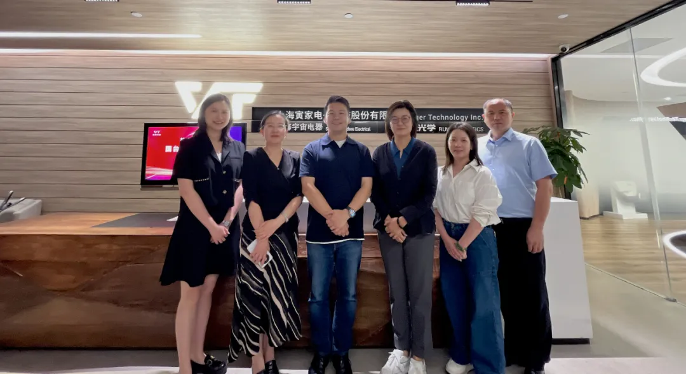

近日，国台办经济局宗文副局长一行莅临寅家科技开展工作调研，通过实地考察、技术演示与座谈交流，深入了解寅家科技的创新成果及两岸产业协同发展实践。

宗文副局长重点考察了寅家科技上海展厅，详细听取了VT-Pilot辅助驾驶系列、VT-Vulcan智能域控系列、VT-NAVI组合感知方案等核心产品的研发进展，对VT系列产品的实用性、功能安全性等给予充分肯定，高度评价寅家科技在智能出行领域稳扎稳打的创业精神。

座谈会上，寅家科技创始人兼CEO陈寅仁详细分享了寅家科技创业十余年的发展历程及未来方向。他表示，“寅家科技始终专注于人工智能领域，深耕智能感知、决策与控制系统的关键技术研发与商业化落地，依托大陆完善的产业链布局、活跃的创新生态体系，目前正在积极探索从成熟的车载应用向通用人工智能领域延伸，并推动相关技术成果在两岸的转化应用。”

宗文副局长认真了解了企业的技术优势、市场状况以及未来的发展规划，对企业扎根大陆发展、积极融入大陆人工智能产业趋势的举措予以肯定，期望企业能够继续坚定信心，吸引更多台湾青年来大陆就业创业，全力以赴走向国际市场，实现高质量发展。
未来，寅家科技将持续以科技创新为核心驱动力，在深化两岸经济文化融合进程中，推进两岸人工智能产业协作落地与交流平台搭建，助力两岸青年人才联合培养与能力提升，为两岸经济文化深度融合发展注入动能、贡献力量。